ĐỘNG CƠ > LẮP LẠI |
| 1. LẮP NÚT BỊT |
Bôi keo lên xung quanh các nút bịt kín.
Dùng SST và một búa, đóng các nút bịt mới vào như chỉ ra trên hình vẽ.
| 2. LẮP VÍT CẤY |
Dùng các khẩu đầu hoa khế E7, lắp các vít cấy A và C.
Bôi keo làm kín lên lỗ vít cấy B của thân máy, và dùng khẩu hoa khế E7 "torx" để lắp vít cấy B.
| 3. LẮP CHỐT THẲNG |
Dùng búa nhựa, đóng chốt thẳng vào thân máy.
| 4. LẮP CHỐT |
Dùng một búa nhựa, đóng các chốt mới vào thân máy.
| 5. LẮP VÒI DẦU |
Dùng các khẩu đầu hoa khế E7, lắp vòi dầu.
| 6. LẮP VÒI XẢ NƯỚC TRÊN THÂN MÁY |
Lắp vòi xả nước trên thân máy như chỉ ra trên hình vẽ..
| 7. LẮP PÍTTÔNG CÙNG VỚI CHỐT |
| 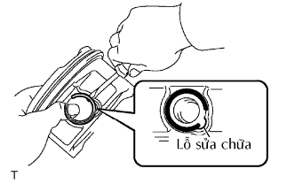 |
Lắp píttông và thanh truyền.
Dùng một tô vít nhỏ, lắp một phanh hãm mới tại một đầu của lỗ chốt píttông.
Nung nóng dần dần píttông đến nhiệt độ xấp xỉ 80 đến 90°C (176 đến 194°F).
Bôi dầu động cơ lên chốt píttông.
Gióng thẳng các dấu phía trước của píttông và thanh truyền, và ấn chốt píttông vào bằng ngón tay cái.
| 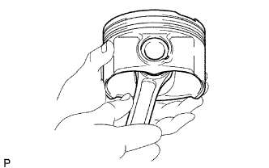 |
Kiểm tra tình trạng lắp giữa píttông và chốt píttông bằng cách thử dịch chuyển píttông phía ra phía trước và phía sau trên chốt píttông.
Dùng một tô vít nhỏ, lắp một phanh hãm mới ở đầu còn lại của lỗ chốt píttông.
 |
Lắp các xéc măng.
Lắp vành căng xéc măng dầu và 2 vành gạt bằng tay.
Dùng dụng cụ lắp xéc măng, hãy lắp 2 xéc măng hơi với dấu mã như được chỉ ra trong hình vẽ.
Định vị các xéc măng sao cho các miệng của nó như được chỉ ra trên hình vẽ.
| 8. LẮP BẠC THANH TRUYỀN |
Gióng thẳng vấu bạc với rãnh của thanh truyền hoặc nắp thanh truyền.
Lắp các bạc vào thanh truyền và nắp thanh truyền.
| 9. LẮP BẠC TRỤC KHUỶU |
Làm sạch cổ khuỷu và hai mặt trong và ngoài của bạc.
Lắp bạc phía trên.
Lắp bạc phía trên vào thân máy sao cho lỗ dầu của bạc phía trên gióng thẳng với lỗ dầu của thân máy, như chỉ ra trong hình vẽ.
| Cổ trục | Điều kiện tiêu chuẩn |
| # 1, 5 | 3.75 mm (0.1476 in.) |
| # 3 | 1.75 mm (0.0689 in.) |
| # 2, 4 | 2.75 mm (0.1083 in.) |
Lắp bạc phía dưới.
Lắp bạc phía dưới vào nắp bạc.
Dùng một thước cặp, đo khoảng cách giữa mép nắp bạc và mép bạc phía dưới.
| Cổ trục | Kích thước |
| # 1, 5 | 3.83 mm (0.1508 in.) |
| # 3 | 1.74 mm (0.0685 in.) |
| # 2, 4 | 2.75 mm (0.1083 in.) |
Với bạc phía trên và phía dưới đã được lắp vào, hãy dùng một búa nhựa để lắp các nắp bạc vào thân máy.
Dùng thước cặp đo độ lệch giữa bạc phía trên và bạc phía dưới, như chỉ ra trên hình vẽ.
Tháo nắp bạc.
| 10. LẮP TRỤC KHUỶU |
Lắp đệm chặn phía trên của trục khuỷu vào thân máy.
Lắp 2 đệm chặn trục dưới vị trí cổ trục No.3 của thân máy với các rãnh dầu hướng ra ngoài.
Lắp 2 đệm chặn trên nắp bạc No.3 với các rãnh của nó quay ra ngoài.
Bôi dầu động cơ lên bạc phía trên, sau đó đặt trục khuỷu lên thân máy.
Bôi dầu động cơ lên bạc phia dưới.
| 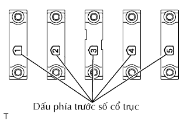 |
Lắp 5 nắp bạc trục khuỷu vào đúng vị trí của chúng.
 |
Lắp các bulông nắp bạc trục khuỷu.
Lắp và xiết chặt đều tay 10 bulông bắt nắp bạc chính theo thứ tự như trong hình vẽ.
 |
Đánh dấu phía trước của các bulông nắp bạc bằng bút sơn.
Xiết chặt các bulông nắp bạc 90° theo thứ tự được đánh số ở trên.
Kiểm tra rằng dấu sơn bây giờ đã quay đi một góc 90° so với vị trí phía trước.
Kiểm tra rằng trục khuỷu quay êm.
Kiểm tra khe hở dọc trục khuỷu.
| 11. LẮP PÍTTÔNG CÙNG VỚI THANH TRUYỀN |
Dùng dụng cụ nén xéc măng, ấn píttông đúng số và cụm thanh truyền vào xilangh với dấu phía trước của pítông hướng về phía trước.
Khớp nắp thanh truyền đã đánh dấu với thanh truyền
Gióng thẳng các chốt của nắp thanh truyền với các lỗ chốt của thanh truyền, sau đó lắp nắp thanh truyền.
| 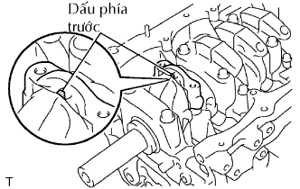 |
Kiểm tra rằng dấu phía trước của nắp thanh truyền đang quay về phía trước.
 |
Lắp các bulông nắp thanh truyền.
Bôi một lớp mỏng dầu động cơ lên các ren và phía dưới của các mũ của các bulông nắp thanh truyền.
Lắp và xiết chặt xen kẽ các bulông của nắp thanh truyền qua một vài lần.
|
Đánh dầu phía trước của các bulông nắp bạc thanh truyền bằng bút sơn.
Xiết các bulông nắp thanh truyền thêm 90° nữa như trên hình vẽ.
Kiểm tra rằng dấu sơn bây giờ đã quay đi một góc 90° so với vị trí phía trước.
Kiểm tra rằng trục khuỷu quay êm.
Kiểm tra khe hở dọc trục thanh truyền.
| 12. LẮP CHỐT |
Dùng một búa nhựa, đóng các chốt mới vào cho đến khi nó bị hãm.
| 13. LẮP NÚT VÍT NO.1 |
Dùng đầu lục giác 10 mm, lắp một gioăng mới và nút vít loại mũ thẳng.
| 14. LẮP NÚT VÍT NO.2 |
Dùng đầu lục giác 19 mm, lắp một gioăng mới và nút vít loại mũ thẳng.
| 15. LẮP NÚT BỊT |
Bôi keo lên lỗ nút bịt của nắp quy lát.
Dùng SST, đóng nút bịt mới vào nắp quy lát như được chỉ ra trong hình vẽ.
| 16. LẮP VÍT CẤY |
Dùng các khẩu đầu hoa khế E5 và E7, lắp các vít cấy.
| 17. LẮP BỘ LỌC CỦA VAN ĐIỀU KHIỂN DẦU |
Kiểm tra rằng không có vật thể lạ trên phần lọc.
Nếu vật thể lạ xuất hiện, hãy làm sạch hoàn toàn.
Dùng chìa vặn lục giác 6 mm, lắp một gioăng mới và bộ lọc van điều khiển dầu bằng nút vít.
| 18. LẮP ĐẾ LÒ XO XUPÁP |
| 19. LẮP PHỚT DẦU THÂN XUPÁP |
Bôi một lớp mỏng dầu động cơ lên lợi của phớt dầu mới.
 |
Dùng SST, ấn các phớt dầu vào.
| 20. LẮP XUPÁP NẠP |
Bôi nhiều dầu động cơ vùng đỉnh của xupáp nạp được chỉ ra trong hình vẽ.
Lắp xupáp, đế lò xo, lò xo nén và móng hãm lò xo vào nắp quy lát.
| 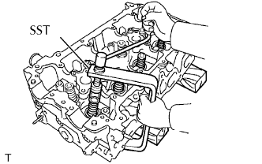 |
Dùng SST và các cục gỗ chèn, nén lò xo và lắp 2 móng hãm xupáp.
Dùng một đột chốt 5 mm và một búa nhựa, đóng nhẹ lên đỉnh của thân xupáp để đảm bảo nó được lắp đúng.
| 21. LẮP XUPÁP XẢ |
Bôi nhiều dầu động cơ vùng đỉnh của xupáp nạp được chỉ ra trong hình vẽ.
Lắp xupáp, đế lò xo, lò xo nén và móng hãm lò xo vào nắp quy lát.
| 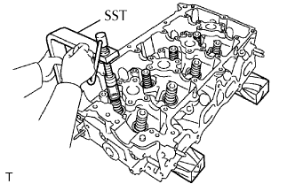 |
Dùng SST và các cục gỗ chèn, nén lò xo và lắp 2 móng hãm xupáp.
Dùng một đột chốt 5 mm và một búa nhựa, đóng nhẹ lên đỉnh của thân xupáp để đảm bảo nó được lắp đúng.
| 22. LẮP BỘ ĐIỀU CHỈNH KHE HỞ XUPÁP |
 |
Đặt bộ điều chỉnh khe hở xupáp vào khay chứa đầy dầu động cơ.
Cắm đầu của SST vào píttông của bộ điều chỉnh khe hở xupáp và dùng đầu này ấn viên bi một chiều xuống vào bên trong píttông.
Nén SST và bộ điều chỉnh khe hở xupáp vào nhau để dịch chuyển píttông lên xuống 5 đến 6 lần.
Kiểm tra sự dịch chuyển của píttông và xả khí.
Sau khi xả khí, hãy tháo SST. Sau đó, thử đẩy nhanh và chắc píttông bằng một ngón tay.
| 23. LẮP NẮP THÂN XUPÁP |
Bôi một lớp mỏng dầu động cơ lên nắp thân xupáp.
Lắp nắp thân xupáp vào nắp quy lát.
| 24. LẮP CÒ MỔ XUPÁP |
| 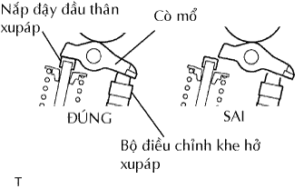 |
Bôi dầu động cơ sạch lên đầu bộ điều chỉnh khe hở xupáp và bề mặt nắp thân xupáp. Sau đó lắp con đội xupáp.
| 25. LẮP TẤM CHẮN PHỚT DẦU PHÍA SAU ĐỘNG CƠ |
Bôi keo làm kín theo dạng sợi liên tục lên các vị trí được chỉ ra như trên hình vẽ.
Lắp phớt dầu bằng 6 bulông.
| 26. LẮP GIÁ BẮT LỌC DẦU |
Lắp gioăng chữ O mới vào giá bắt lọc dầu.
Lắp một gioăng chữ O mới và gioăng vào bu lông cút nối giá bắt lọc dầu.
Lắp giá bắt lọc dầu bằng bu lông nối lọc dầu và đai ốc.
| 27. LẮP CÚT NỐI CỦA LỌC DẦU |
Dùng khẩu 27 mm, lắp cút nối lọc dầu.
| 28. LẮP LỌC DẦU |
 |
Kiểm tra và lau sạch mặt lắp của lọc dầu.
Bôi dầu động cơ sạch lên gioăng của lọc dầu mới.
Vặn nhẹ lọc dầu vào đúng vị trí và xiết chặt nó cho đến khi gioăng tiếp xúc với đế.
Dùng SST, xiết chặt lọc dầu.
Khi dùng cờlê cân lực:
Khi không dùng cờlê cân lực:
Xiết chặt bộ lọc dầu 3/4 vòng bằng cách dùng cờlê thông thường.
| 29. LẮP GIOĂNG NẮP QUY LÁT |
Bôi keo làm kín dạng sợi liên tục lên phía trên thân máy và phía trên gioăng nắp quy lát như được chỉ ra trên hình vẽ.
Đặt gioăng nắp quy lát mới lên bề mặt cuả thân máy với số dập trên gioăng hướng lên trên.
| 30. LẮP NẮP QUY LÁT |
Đặt nắp quy lát lên thân máy.
Bôi một lớp mỏng dầu động cơ lên các ren và phía dưới các mũ của các bulông nắp quy lát.
Dùng cơ lê 12 cạnh 10 mm, lắp và xiết chặt đều tay 10 bulông bắt nắp quy lát có đệm phẳng qua một vài bước, theo thứ tự như trong hình vẽ.
Đánh dấu phía trước lên mũ của bulông nắp quy lát bằng bút sơn.
Xiết thêm các bulông nắp quy lát 90 độ theo thứ tự được đánh số.
Xiết chặt các bulông nắp quy lát thêm 90 độ nữa.
Kiểm tra răng dấu sơn bây giờ đã quay về phía sau.
Keo làm kín tràn ra phía trước của động cơ. Hãy làm sạch hết keo.
| 31. LẮP BÁNH RĂNG PHỐI KHÍ TRỤC CAM |
Lắp bánh răng phối khí trục cam và trục cam vào nhau bằng cách gióng thẳng rãnh then và chốt thẳng.
Kiểm tra rằng không có khe hở giữa mặt đầu của bánh răng và trục cam.
Xiết chặt bulông có mặt bích với bánh răng phối khí trục cam được cố định tại chỗ.
| 32. LẮP ĐĨA XÍCH PHỐI KHÍ TRỤC CAM |
| 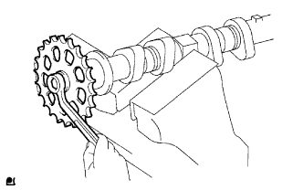 |
Kẹp trục cam lên êtô và sau đó lắp đĩa xích phối khí trục cam vào trục cam bằng bulông.
| 33. LẮP TRỤC CAM |
| 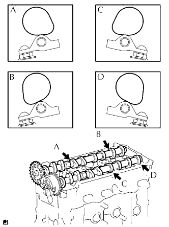 |
Hãy bôi dầu động cơ sạch lên phần cam của trục cam và các ngõng trục trên nắp quy lát.
Lắp trục cam và trục cam số 2 như được như chỉ ra trên hình vẽ.
| 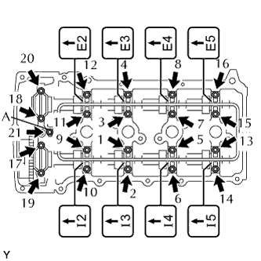 |
Lắp lỏng nắp bạc trục cam số 1.
Kiểm tra vị trí chính xác của từng nắp bạc trục cam No.2 và lắp từng nắp.
Lắp gioăng chữ O mới vào nắp bạc trục cam số 1.
Lắp lỏng ống phân phối dầu.
Xiết chặt 21 bu lông theo thứ tự như trên hình vẽ.
| 34. LẮP LỖ DẦU |
Lắp một gioăng mới và vòi dầu bằng bu lông.
| 35. LẮP THEN BẮT PULI TRỤC KHUỶU |
Lắp 2 then puli vào trục khuỷu.
| 36. LẮP ĐĨA TÍN HIỆU CẢM BIẾN VỊ TRÍ TRỤC KHUỶU |
Lắp đĩa tín hiệu cảm biến với dấu phía trước hướng về trước.
| 37. LẮP ĐĨA XÍCH TRÊN TRỤC KHUỶU |
Lắp đã xích như trên hình vẽ.
| 38. LẮP GIẢM CHẤN XÍCH |
Lắp bộ giảm chấn xích bằng 2 bulông.
| 39. LẮP XÍCH |
Như trên hình vẽ, hãy lắp xích lên đĩa xích hoặc bánh răng xích với dấu sơn đã gióng thẳng với các dấu phối khí trên đĩa xích và bánh răng.
Dùng một đoạn dây để buộc xích phía đĩa xích phối khí trên trục khuỷu. Hãy buộc ở gần đĩa xích.
| 40. LẮP RAY TRƯỢT BỘ CĂNG XÍCH |
Lắp ray trượt bộ căng xích bằng bulông.
| 41. LẮP BỘ CĂNG XÍCH |
Đẩy tấm hãm lên trên để nhả khoá và ấn píttông vào trong bộ căng xích.
Đẩy tấm hãm xuống dưới để đặt chế độ khoá và cắm một chìa lục giác vào lỗ của tấm hãm.
Lắp một gioăng mới và bộ căng xích bằng bu lông và đai ốc.
| 42. LẮP DẪN HƯỚNG XÍCH CAM |
 |
Lắp một gioăng chữ O mới và dẫn hướng xích cam vào bằng 2 bulông.
Tháo chìa lục giác.
| 43. LẮP VAN AN TOÀN CỦA BƠM DẦU |
 |
Bôi dầu động cơ lên van an toàn.
Lồng van một chiều và lò xo vào lỗ thân bơm.
Lắp gioăng mới vào nút.
Dùng đầu khẩu 27 mm, lắp nút.
| 44. LẮP PHỚT DẦU NẮP XÍCH CAM |
Đặt nắp xích cam lên các cục gỗ.
Dùng SST, đóng phớt dầu vào cho đến khi bề mặt của nó ngang bằng với mép của hộp bánh răng cam.
Bôi một lớp mỏng mỡ MP lên lợi của phớt dầu mới.
| 45. LẮP BƠM NƯỚC |
 |
Lắp một gioăng mới và bơm nước bằng 8 bulông.
| 46. LẮP NẮP XÍCH CAM |
| 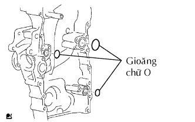 |
Lắp 3 gioăng chữ O mới vào nắp xích cam như chỉ ra trên hình vẽ
 |
Bôi keo lên nút vỏ bánh răng cam.
 |
Dùng khẩu lục giác 10 mm, lắp nút của nắp xích cam.
Bôi khe làm kín lên các vị trí như trên hình vẽ.
| Vị trí | Điều kiện tiêu chuẩn |
| A - A, C - C | 2.5 đến 3.0 mm (0.098 đến 0.118 in.) |
| B - B, D - D | 4.0 đến 4.5 mm (0.157 đến 0.177 in.) |
| E | 3.0 đến 3.5 mm (0.118 đến 0.138 in.) |
 |
Gióng thẳng then hoa rôto dẫn động bơm dầu và trục khuỷu như trên hình vẽ. Hãy lắp then hoa và nắp xích cam vào trục khuỷu.
Lắp lỏng nắp xích cam bằng 19 bulông và đai ốc, nhưng chưa được xiết chặt các bulông và đai ốc.
Bao gồm cả bulông A, xiết chặt hoàn toàn các bulông và đai ốc theo thứ tự: Vùng 1, Vùng 2 và Vùng 3.
Xiết chặt hoàn toàn các bulông A theo thứ tư:ï Vùng 2 và Vùng 3.
Xiết chặt hoàn toàn các bulông E ở trong Vùng 4.
| 47. LẮP CÁCTE DẦU SỐ 1 |
Lắp vít cấy.
Dùng các khẩu đầu hoa khế E5, lắp các vít cấy có chữ A của cácte dầu như được chỉ ra trên hình vẽ.
Dùng khẩu đầu hoa khế E7, lắp các vít cấy có dấu B của lưới lọc dầu như chỉ ra trên hình vẽ
Lắp nút bịt mới.
Bôi keo lên xung quanh các nút bịt kín.
Dùng SST, lắp nút bịt như được chỉ ra trên hình vẽ.
Bôi keo làm kín theo dạng sợi liên tục lên các vị trí được chỉ ra như trên hình vẽ.
 |
Lắp tạm thời cácte dầu bằng 16 bulông và 2 đai ốc.
Xiết chặt đều tay 18 bulông và 2 đai ốc qua một vài lần theo thứ tự được chỉ ra như trong hình vẽ.
| 48. LẮP LƯỚI LỌC DẦU |
Lắp một gioăng mới và lưới lọc dầu bằng bulông và 2 đai ốc.
| 49. LẮP CÁCTE DẦU SỐ 2 |
Bôi keo làm kín theo dạng sợi liên tục lên các vị trí được chỉ ra như trên hình vẽ.
Lắp tạm thời cácte dầu bằng 20 bulông và 2 đai ốc.
Xiết chặt đều tay 20 bulông và 2 đai ốc theo thứ tự được chỉ ra như trong hình vẽ.
Lắp một gioăng mới và nút xả.
| 50. LẮP PULI TRỤC KHUỶU |
Gióng thẳng then puli với rãnh then trên puli và lắp puli vào.
Dùng SST, lắp bulông puli mới.
| 51. LẮP NẮP ĐẬY NẮP QUY LÁT |
Lắp 2 gioăng vào nắp đậy nắp quy lát.
Bôi khe làm kín lên các vị trí như trên hình vẽ.
| 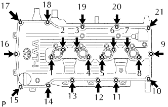 |
Lắp tạm nắp bằng 19 bulông và 2 đai ốc.
Xiết chặt đều tay 19 bulông và 2 đai ốc theo thứ tự như trong hình vẽ.
Thứ tự đánh số, kiểm tra lại rằng các bu lông có đánh dấu 1 đến 8 đã được xiết đạt mômen xiết tiêu chuẩn. Hãy xiết chặt các bu lông nếu cần thiết.
| 52. LẮP VAN THÔNG HƠI |
| 53. LẮP NẮP LỖ ĐỔ DẦU |